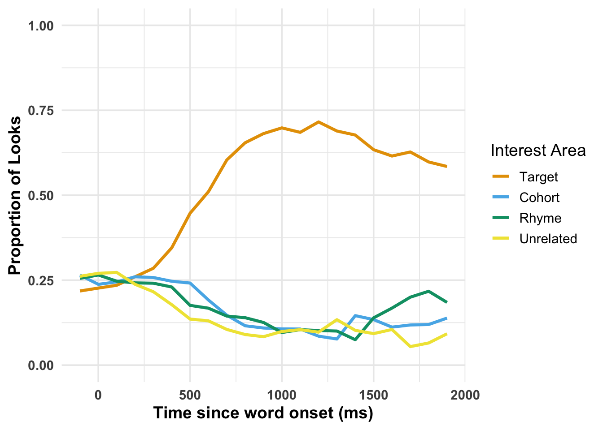

options(stringsAsFactors = F) # no automatic data transformation
options("scipen" = 100, "digits" = 10) # suppress math annotation
library(tidyverse)
library(here) # relative paths instead of abosoulte aids in reproduce
library(tinytable) # nice tables
library(janitor)# functions for cleaning up your column names
library(easystats)Introduction to webgazeR
#| echo:false
#|
project:
render: ['*.qmd']Here I outline the basic functions of the webgazeR package.
Packages
Here we will load in packages needed to run our vignette.
Load webgazeR
remotes::install_github("https://github.com/jgeller112/webgazeR")library(webgazeR)Eye data
When data is generated from Gorilla, each trial in your experiment is its own file. Because of this, we need to take all the individual files and merge them together. The merge_webcam_files function merges each trial from each participant into a single tibble or dataframe. Before running the merge_webcam_files function, ensure that your working directory is set to where the files are stored. This function reads in all the .xlsx files, binds them together into one dataframe, and cleans up the column names. The function then filters the data to include only rows where the type is “prediction” and the screen_index matches the specified value (in our case, screen 4). This is where eye-tracking data was recorded. The function renames the spreadsheet_row column to trial and sets both trial and subjectas factors for further analysis in our pipeline. As a note, all steps should be followed in order due to the renaming of column names. If you encounter an error it might be because column names have not been changed.
# Get the list of all files in the folder
vwp_files <- list.files(here::here("data", "monolinguals", "raw"), pattern = "\\.xlsx$", full.names = TRUE)
# Exclude files that contain "calibration" in their filename
vwp_paths_filtered <- vwp_files[!grepl("calibration", vwp_files)]setwd(here::here("data", "monolinguals", "raw")) # set working directory to raw data folder
edat <- merge_webcam_files(vwp_paths_filtered, screen_index=4) # eye tracking occured ons creen index 4the webgazeR package includes a combined dataset for us to use
edat <- webgazeR::eyedataBehavioral Data
Gorilla produces a .csv file that include trial-level information (agg_ege_data). Below we read that object in and create an object called emstr that selects useful columns from that file and renames stimuli to make them more intuitive. Because most of this will be user-specific, no function is called here.
# load in trial level data
agg_eye_data <- webgazeR::behav_dataBelow we describe the pre-processing done on the behavioral data file. The below code processes and transforms the agg_eye_data dataset into a cleaned and structured format for further analysis. First, the code renames several columns for easier access using the janitor::clean_names function. It filters the dataset to include only rows where zone_type is “response_button_image”, representing the picture selected for that trial. Afterward, the function renames additional columns (tlpic to TL, trpic to TR, etc.). We also renamed participant_private_id to subject, spreadsheet_row to trial, and reaction_time to RT. This makes our columns consistent with the edat above for merging later on. Lastly, the `reaction time (RT) is converted to a numeric format for further numerical analysis.
emstr <- agg_eye_data %>%
janitor::clean_names() %>%
# Select specific columns to keep in the dataset
dplyr::select(participant_private_id, correct, tlpic, trpic, blpic, brpic, trialtype, targetword, tlcode, trcode, blcode, brcode, zone_name, zone_type,reaction_time, spreadsheet_row, response) %>%
# Filter the rows where 'Zone.Type' equals "response_button_image"
dplyr::filter(zone_type == "response_button_image") %>%
# Rename columns for easier use and readability
dplyr::rename(
"TL" = "tlpic", # Rename 'tlpic' to 'TL'
"TR" = "trpic", # Rename 'trpic' to 'TR'
"BL" = "blpic", # Rename 'blpic' to 'BL'
"BR" = "brpic", # Rename 'brpic' to 'BR'
"targ_loc" = "zone_name", # Rename 'Zone.Name' to 'targ_loc'
"subject" = "participant_private_id", # Rename 'Participant.Private.ID' to 'subject'
"trial" = "spreadsheet_row", # Rename 'spreadsheet_row' to 'trial'
"acc" = "correct", # Rename 'Correct' to 'acc' (accuracy)
"RT" = "reaction_time" # Rename 'Reaction.Time' to 'RT'
) %>%
# Convert the 'RT' (Reaction Time) column to numeric type
mutate(RT = as.numeric(RT),
subject=as.factor(subject),
trial=as.factor(trial))Get audio onset time
Because we are using audio on each trial and we are running this experiment for the browser audio onset is never going to to conistent across participants. In Gorilla there is an option to collect advanced audio features such as when the audio play was requested, fired )played and ended. We will want to incorporate this into our pipeline. Gorilla records the onset of the audio which varies by participant. We are extracting that here by filtering zone_type to content_web_audio and response equal to “AUDIO PLAY EVENT FIRED”. This will tell us when the audio was triggered in the experiment (reaction_time).
audio_rt <- agg_eye_data %>%
janitor::clean_names()%>%
select(participant_private_id,zone_type, spreadsheet_row, reaction_time, response) %>%
filter(zone_type=="content_web_audio", response=="AUDIO PLAY EVENT FIRED")%>%
distinct() %>%
rename("subject" = "participant_private_id",
"trial" ="spreadsheet_row",
"RT_audio" = "reaction_time") %>%
select(-zone_type) %>%
mutate(RT_audio=as.numeric(RT_audio))We then merge this information with emstr. We see that RT_audio has been added to our dataframe.
trial_data_rt <- merge(emstr, audio_rt, by=c("subject", "trial"))
head(trial_data_rt) %>%
head() %>%
tt()| subject | trial | acc | TL | TR | BL | BR | trialtype | targetword | tlcode | trcode | blcode | brcode | targ_loc | zone_type | RT | response.x | RT_audio | response.y |
|---|---|---|---|---|---|---|---|---|---|---|---|---|---|---|---|---|---|---|
| 11788555 | 10 | 1 | sunrise.jpg | pillar.jpg | pillow.jpg | willow.jpg | TRUU | willow.jpg | R | U | U2 | T | BR | response_button_image | 1822.1999998 | willow.jpg | 17.09999990 | AUDIO PLAY EVENT FIRED |
| 11788555 | 103 | 1 | cap.jpg | hose.jpg | goal.jpg | hole.jpg | TCUU | hose.jpg | U | T | U2 | C | TR | response_button_image | 1467.0000000 | hose.jpg | 10.59999990 | AUDIO PLAY EVENT FIRED |
| 11788555 | 104 | 0 | hip.jpg | cave.jpg | cage.jpg | gauge.jpg | TCRU | cage.jpg | U | C | T | R | TR | response_button_image | 929.8999996 | cave.jpg | 17.89999962 | AUDIO PLAY EVENT FIRED |
| 11788555 | 106 | 1 | pear.jpg | bear.jpg | jet.jpg | base.jpg | TUUU | jet.jpg | U3 | U | T | U2 | BL | response_button_image | 1661.4000001 | jet.jpg | 12.00000000 | AUDIO PLAY EVENT FIRED |
| 11788555 | 107 | 1 | beagle.jpg | mother.jpg | money.jpg | honey.jpg | TCUU | mother.jpg | U | T | C | U2 | TR | response_button_image | 1513.5999999 | mother.jpg | 15.90000010 | AUDIO PLAY EVENT FIRED |
| 11788555 | 108 | 1 | parrot.jpg | carrot.jpg | carriage.jpg | tadpole.jpg | TCRU | carrot.jpg | R | T | C | U | TR | response_button_image | 1456.8000002 | carrot.jpg | 16.00000000 | AUDIO PLAY EVENT FIRED |
Sampling Rate
While most commercial eye-trackers sample at a constant rate, webcam eye-trackers do not. Below is some code to calculate the sampling rate of each participant. Ideally, you should not have a sampling rate less than 5 Hz. It has been recommended you drop those values. The below function analyze_sample_rate calculates calculates the sampling rate for each subject and trial in an eye-tracking dataset. It provides overall statistics, including the median and standard deviation of sampling rates in your experiment,and also generates a histogram of median sampling rates by subject with a density plot overlayed.
samp_rate <- analyze_sampling_rate(edat)Overall Median Sampling Rate (Hz): 24.76936956
Overall Standard Deviation of Sampling Rate (Hz): 7.807913315
Sampling Rate by Trial:
# A tibble: 3,122 × 5
# Groups: subject [23]
subject trial max_time n_times SR
<int> <int> <dbl> <int> <dbl>
1 11788555 7 3664. 107 29.2
2 11788555 8 1295 39 30.1
3 11788555 9 2298. 68 29.6
4 11788555 10 1743. 52 29.8
5 11788555 12 1741. 52 29.9
6 11788555 13 1365. 40 29.3
7 11788555 15 1404. 40 28.5
8 11788555 16 1714. 51 29.8
9 11788555 21 1584. 47 29.7
10 11788555 27 2103. 62 29.5
# ℹ 3,112 more rows
Median Sampling Rate by Subject:
# A tibble: 23 × 2
subject med_SR
<int> <dbl>
1 11788555 29.6
2 11788682 29.7
3 11788824 23.9
4 11788857 8.79
5 11789574 11.5
6 11795362 22.6
7 11795372 24.8
8 11795375 28.5
9 11795376 29.9
10 11795379 30.4
# ℹ 13 more rows
In this example, we have a median sampling rate of 24.77 with a SD of 7.81.
When using the above function, separate data frames are produced for subjects and trials. These can be added to the behavioral data object.
# Extract by-subject and by-trial sampling rates from the result
subject_sampling_rate <- samp_rate$median_SR_by_subject # Sampling rate by subject
trial_sampling_rate <- samp_rate$SR_by_trial # Sampling rate by trial
trial_sampling_rate$subject<-as.factor(trial_sampling_rate$subject)
# Assuming target_data is your other dataset that contains subject and trial information
# Append the by-subject sampling rate to target_data (based on subject)
subject_sampling_rate$subject <- as.factor(subject_sampling_rate$subject)
target_data_with_subject_SR <- trial_data_rt %>%
left_join(subject_sampling_rate, by = "subject")
# Append the by-trial sampling rate to target_data (based on subject and trial)
trial_sampling_rate$trial <- as.factor(trial_sampling_rate$trial)
target_data_with_full_SR <- target_data_with_subject_SR %>%
select(subject, trial, med_SR)%>%
left_join(trial_sampling_rate, by = c("subject", "trial"))We can add this to our behavioral data
trial_data <- left_join(trial_data_rt, target_data_with_full_SR, by=c("subject", "trial"))Users can use the filter_sampling_rate function to either either (1) throw out data, by subject, by trial, or both, and (2) label it sampling rates below a certain threshold as bad (TRUE or FALSE). Let’s use the filter_sampling_rate() function to do this. We will read in our target_data_with_full_SR object.
We leave it up to the user to decide what to do and make no specific recommendations. In our case we are going to remove the data by subject and by trial (action==“both”) if sampling frequency is below 5hz (threshold=5). The filter_sampling_rate function is designed to process a dataset containing subject-level and trial-level sampling rates. It allows the user to either filter out data that falls below a certain sampling rate threshold or simply label it as “bad”. The function gives flexibility by allowing the threshold to be applied at the subject level, trial level, or both. It also lets the user decide whether to remove the data or flag it as below the threshold without removing it. If action = remove, the function will output how many subjects and trials were removed by on the threshold.
filter_edat <- filter_sampling_rate(trial_data,threshold = 5,
action = "remove",
by = "both")filter_edat returns a dataframe with trials and subjects removed. If we set the argument action to label, filter_edat_label would return a dataframe that includes column(s) with sampling rates < 5 labeled as TRUE (bad) or FALSE
filter_edat_label <- filter_sampling_rate(trial_data,threshold = 5,
action = "label",
by="both")Here no subjects had a threshold below 5. However, 18 trials did, and they were removed.
Out-of-bounds (outside of screen)
It is important that we do not include points that fall outside the standardized coordinates. The gaze_oob function calculates how many of the data points fall outside the standardized range. This function returns how many data points fall outside this range by subject and provides a percentage. This information would be useful to include in the final paper. We then add by-subject and by-trial out of bounds data and exclude participants and trials with > 30% missing data.
oob_data <- gaze_oob(edat)Subject: 11788555
Total points: 2483
Points outside the range: 608
Total missing percentage: 24.49%
X: 17.28%
Y: 13.53%
Subject: 11788682
Total points: 5798
Points outside the range: 551
Total missing percentage: 9.5%
X: 6.83%
Y: 3.47%
Subject: 11788824
Total points: 6961
Points outside the range: 1792
Total missing percentage: 25.74%
X: 17.14%
Y: 13.37%
Subject: 11788857
Total points: 2237
Points outside the range: 277
Total missing percentage: 12.38%
X: 11.85%
Y: 1.3%
Subject: 11789574
Total points: 932
Points outside the range: 221
Total missing percentage: 23.71%
X: 14.16%
Y: 16.09%
Subject: 11795362
Total points: 3951
Points outside the range: 608
Total missing percentage: 15.39%
X: 10%
Y: 7.69%
Subject: 11795372
Total points: 4598
Points outside the range: 677
Total missing percentage: 14.72%
X: 9.11%
Y: 8.22%
Subject: 11795375
Total points: 6795
Points outside the range: 1008
Total missing percentage: 14.83%
X: 11.18%
Y: 6.99%
Subject: 11795376
Total points: 6749
Points outside the range: 1676
Total missing percentage: 24.83%
X: 13.48%
Y: 16.42%
Subject: 11795379
Total points: 2247
Points outside the range: 350
Total missing percentage: 15.58%
X: 4.36%
Y: 12.28%
Subject: 11795382
Total points: 5239
Points outside the range: 528
Total missing percentage: 10.08%
X: 6.91%
Y: 5.99%
Subject: 11795385
Total points: 6172
Points outside the range: 1557
Total missing percentage: 25.23%
X: 14.52%
Y: 15.83%
Subject: 11795386
Total points: 4658
Points outside the range: 1397
Total missing percentage: 29.99%
X: 17%
Y: 22.33%
Subject: 11795387
Total points: 3634
Points outside the range: 586
Total missing percentage: 16.13%
X: 9.41%
Y: 9.25%
Subject: 11795388
Total points: 4097
Points outside the range: 755
Total missing percentage: 18.43%
X: 11.33%
Y: 11.11%
Subject: 11795426
Total points: 1242
Points outside the range: 122
Total missing percentage: 9.82%
X: 6.44%
Y: 6.44%
Subject: 11795446
Total points: 6712
Points outside the range: 546
Total missing percentage: 8.13%
X: 5.91%
Y: 4.68%
Subject: 11795529
Total points: 4668
Points outside the range: 482
Total missing percentage: 10.33%
X: 6.92%
Y: 4.86%
Subject: 11795650
Total points: 2213
Points outside the range: 101
Total missing percentage: 4.56%
X: 2.08%
Y: 2.89%
Subject: 11795671
Total points: 4982
Points outside the range: 1438
Total missing percentage: 28.86%
X: 18.15%
Y: 17.7%
Subject: 11796749
Total points: 6469
Points outside the range: 1891
Total missing percentage: 29.23%
X: 23.09%
Y: 13.48%
Subject: 11796756
Total points: 6249
Points outside the range: 820
Total missing percentage: 13.12%
X: 7.25%
Y: 8.64%
Subject: 11796779
Total points: 5737
Points outside the range: 253
Total missing percentage: 4.41%
X: 2.18%
Y: 2.75%oob_data %>%
tt()| subject | total_points | outside_count | total_missing_percentage | x_outside_count | y_outside_count | x_outside_percentage | y_outside_percentage |
|---|---|---|---|---|---|---|---|
| 11788555 | 2483 | 608 | 24.486508256 | 429 | 336 | 17.277486911 | 13.532017720 |
| 11788682 | 5798 | 551 | 9.503276992 | 396 | 201 | 6.829941359 | 3.466712660 |
| 11788824 | 6961 | 1792 | 25.743427668 | 1193 | 931 | 17.138342192 | 13.374515156 |
| 11788857 | 2237 | 277 | 12.382655342 | 265 | 29 | 11.846222620 | 1.296379079 |
| 11789574 | 932 | 221 | 23.712446352 | 132 | 150 | 14.163090129 | 16.094420601 |
| 11795362 | 3951 | 608 | 15.388509238 | 395 | 304 | 9.997468995 | 7.694254619 |
| 11795372 | 4598 | 677 | 14.723792953 | 419 | 378 | 9.112657677 | 8.220965637 |
| 11795375 | 6795 | 1008 | 14.834437086 | 760 | 475 | 11.184694628 | 6.990434143 |
| 11795376 | 6749 | 1676 | 24.833308638 | 910 | 1108 | 13.483479034 | 16.417247000 |
| 11795379 | 2247 | 350 | 15.576323988 | 98 | 276 | 4.361370717 | 12.283044059 |
| 11795382 | 5239 | 528 | 10.078259210 | 362 | 314 | 6.909715595 | 5.993510212 |
| 11795385 | 6172 | 1557 | 25.226830849 | 896 | 977 | 14.517174336 | 15.829552819 |
| 11795386 | 4658 | 1397 | 29.991412623 | 792 | 1040 | 17.003005582 | 22.327179047 |
| 11795387 | 3634 | 586 | 16.125481563 | 342 | 336 | 9.411117226 | 9.246009906 |
| 11795388 | 4097 | 755 | 18.428118135 | 464 | 455 | 11.325360020 | 11.105687088 |
| 11795426 | 1242 | 122 | 9.822866345 | 80 | 80 | 6.441223833 | 6.441223833 |
| 11795446 | 6712 | 546 | 8.134684148 | 397 | 314 | 5.914779499 | 4.678188319 |
| 11795529 | 4668 | 482 | 10.325621251 | 323 | 227 | 6.919451585 | 4.862896315 |
| 11795650 | 2213 | 101 | 4.563940352 | 46 | 64 | 2.078626299 | 2.892001808 |
| 11795671 | 4982 | 1438 | 28.863910076 | 904 | 882 | 18.145323163 | 17.703733440 |
| 11796749 | 6469 | 1891 | 29.231720513 | 1494 | 872 | 23.094759623 | 13.479672283 |
| 11796756 | 6249 | 820 | 13.122099536 | 453 | 540 | 7.249159866 | 8.641382621 |
| 11796779 | 5737 | 253 | 4.409970368 | 125 | 158 | 2.178839115 | 2.754052641 |
Zone coordinates
In the lab, we can control every aspect of the experiment. Online we cant do this. Participants are going to be completing the experiment under a variety of conditions. This includes using different computers, with very different screen dimensions. To control for this, Gorilla outputs standardized zone coordinates. As discussed in the Gorilla documentation, the Gorilla layout engine lays everything out in a 4:3 frame and makes that frame as big as possible. The normalized coordinates are then expressed relative to this frame; for example, the coordinate 0.5, 0.5 will always be the center of the screen, regardless of the size of the participant’s screen. We used the normalized coordinates in our analysis. However, there are a few different ways to specify the four coordinates of the screen, which I think is worth highlighting.
Quadrant Approach
One way is to make the AOIs as big as possible and place them in the four quadrants of the screen. What we will need to first is create a dataframe with location of the AOI (e.g., TL, TR, BL, BR), x and y normalized coordinates and width and height normalized. In addition, we will get the xmin, xmanx, and ymax and ymin of the AOIs.
# Create a data frame for the quadrants with an added column for the quadrant labels
aoi_loc <- data.frame(
loc = c('TL', 'TR', 'BL', 'BR'),
x_normalized = c(0, 0.5, 0, 0.5),
y_normalized = c(0.5, 0.5, 0, 0),
width_normalized = c(0.5, 0.5, 0.5, 0.5),
height_normalized = c(0.5, 0.5, 0.5, 0.5)) %>%
mutate(xmin = x_normalized, ymin = y_normalized,
xmax = x_normalized+width_normalized,
ymax = y_normalized+height_normalized)
aoi_loc %>%
tt()| loc | x_normalized | y_normalized | width_normalized | height_normalized | xmin | ymin | xmax | ymax |
|---|---|---|---|---|---|---|---|---|
| TL | 0.0 | 0.5 | 0.5 | 0.5 | 0.0 | 0.5 | 0.5 | 1.0 |
| TR | 0.5 | 0.5 | 0.5 | 0.5 | 0.5 | 0.5 | 1.0 | 1.0 |
| BL | 0.0 | 0.0 | 0.5 | 0.5 | 0.0 | 0.0 | 0.5 | 0.5 |
| BR | 0.5 | 0.0 | 0.5 | 0.5 | 0.5 | 0.0 | 1.0 | 0.5 |
Clean-up eye data
Here we are going to remove poor convergence scales and confidence. We will also remove coordinates that are 0 in our data.
edat_1 <- edat %>%
dplyr::filter(convergence <= .5, face_conf >= .5) %>%
# remove rows without gaze information
dplyr::filter(x_pred_normalised != 0,
y_pred_normalised != 0) Combining Eye and Trial-level data
Next we are going to combine the eye-tracking data and behavioral data by using the left_join function.
edat_1$subject<-as.factor(edat_1$subject)
edat_1$trial<-as.factor(edat_1$trial)
dat <- left_join(edat_1, filter_edat, by = c("subject","trial"))
dat <- dat %>%
distinct() # make sure to remove duplicate rowsLet’s verify our AOIs look how they are suppose to.
#look at the AOIs and see if they make sense
# Create a data frame for the quadrants
quadrants <- data.frame(
x = c(0, 0.5, 0, 0.5),
y = c(0.5, 0.5, 0, 0),
width = c(0.5, 0.5, 0.5, 0.5),
height = c(0.5, 0.5, 0.5, 0.5),
color = c('red', 'blue', 'green', 'orange'),
label = c('TL', 'TR', 'BL= 0.5', 'BR = 0.5')
)
# Create the plot
ggplot() +
geom_rect(data = quadrants, aes(xmin = x, xmax = x + width, ymin = y, ymax = y + height, fill = color),
color = 'black', alpha = 0) +
geom_text(data = quadrants, aes(x = x + width/2, y = y + height/2, label = label), color = 'black', size = 5) +
scale_fill_identity() +
coord_fixed() +
labs(x = 'Normalized X', y = 'Normalized Y', title = 'Quadrants with Width Annotations') +
theme_minimal()
Excellent!
Matching conditions with screen locations
In this experiment we have four different trial types:
- Target, Cohort, Rhyme, Unrealted
- Target, Cohort, Unrealted, Unrelated
- Target, Unrelated, Unrealted, Unrelated
- Target, Rhyme, Unrelated, Unrelated
We will first match the pictures in the TL, TR, BL, BR columns to the correct code condition (T,C, R, U, U2, U3).
# Assuming your data is in a data frame called df
dat <- dat %>%
mutate(
Target = case_when(
tlcode == "T" ~ TL,
trcode == "T" ~ TR,
blcode == "T" ~ BL,
brcode == "T" ~ BR,
TRUE ~ NA_character_ # Default to NA if no match
),
Unrelated = case_when(
tlcode == "U" ~ TL,
trcode == "U" ~ TR,
blcode == "U" ~ BL,
brcode == "U" ~ BR,
TRUE ~ NA_character_
),
Unrelated2 = case_when(
tlcode == "U2" ~ TL,
trcode == "U2" ~ TR,
blcode == "U2" ~ BL,
brcode == "U2" ~ BR,
TRUE ~ NA_character_
),
Unrelated3 = case_when(
tlcode == "U3" ~ TL,
trcode == "U3" ~ TR,
blcode == "U3" ~ BL,
brcode == "U3" ~ BR,
TRUE ~ NA_character_
),
Rhyme = case_when(
tlcode == "R" ~ TL,
trcode == "R" ~ TR,
blcode == "R" ~ BL,
brcode == "R" ~ BR,
TRUE ~ NA_character_
),
Cohort = case_when(
tlcode == "C" ~ TL,
trcode == "C" ~ TR,
blcode == "C" ~ BL,
brcode == "C" ~ BR,
TRUE ~ NA_character_
)
)head(dat) %>%
tt()| X | x0 | filename | trial | time_stamp | time | type | screen_index | x_pred | y_pred | x_pred_normalised | y_pred_normalised | convergence | face_conf | zone_name | zone_x | zone_y | zone_width | zone_height | zone_x_normalised | zone_y_normalised | zone_width_normalised | zone_height_normalised | subject | acc | TL | TR | BL | BR | trialtype | targetword | tlcode | trcode | blcode | brcode | targ_loc | zone_type | RT | response.x | RT_audio | response.y | med_SR | max_time | n_times | SR | Target | Unrelated | Unrelated2 | Unrelated3 | Rhyme | Cohort |
|---|---|---|---|---|---|---|---|---|---|---|---|---|---|---|---|---|---|---|---|---|---|---|---|---|---|---|---|---|---|---|---|---|---|---|---|---|---|---|---|---|---|---|---|---|---|---|---|---|---|---|
| 1 | NA | eyetracking_collection | 153 | 1727868218964 | 0.00000000 | prediction | 4 | 921.5823073 | -61.68745669 | 0.4717325812 | -0.06077581940 | 0 | 1 | NA | 0 | 0 | 0 | 0 | 0 | 0 | 0 | 0 | 11788555 | 1 | candle.jpg | sandal.jpg | sandwich.jpg | building.jpg | TCUU | sandwich.jpg | U2 | C | T | U | BL | response_button_image | 1997.8 | sandwich.jpg | 13.0999999 | AUDIO PLAY EVENT FIRED | 29.63857024 | 1922.4 | 57 | 29.65043695 | sandwich.jpg | building.jpg | candle.jpg | NA | NA | sandal.jpg |
| 2 | NA | eyetracking_collection | 153 | 1727868218999 | 34.00000000 | prediction | 4 | 958.2899489 | 78.26706763 | 0.4988631366 | 0.07711041146 | 0 | 1 | NA | 0 | 0 | 0 | 0 | 0 | 0 | 0 | 0 | 11788555 | 1 | candle.jpg | sandal.jpg | sandwich.jpg | building.jpg | TCUU | sandwich.jpg | U2 | C | T | U | BL | response_button_image | 1997.8 | sandwich.jpg | 13.0999999 | AUDIO PLAY EVENT FIRED | 29.63857024 | 1922.4 | 57 | 29.65043695 | sandwich.jpg | building.jpg | candle.jpg | NA | NA | sandal.jpg |
| 3 | NA | eyetracking_collection | 153 | 1727868219039 | 73.30000019 | prediction | 4 | 1036.1006719 | 247.37493626 | 0.5563729098 | 0.24371914902 | 0 | 1 | NA | 0 | 0 | 0 | 0 | 0 | 0 | 0 | 0 | 11788555 | 1 | candle.jpg | sandal.jpg | sandwich.jpg | building.jpg | TCUU | sandwich.jpg | U2 | C | T | U | BL | response_button_image | 1997.8 | sandwich.jpg | 13.0999999 | AUDIO PLAY EVENT FIRED | 29.63857024 | 1922.4 | 57 | 29.65043695 | sandwich.jpg | building.jpg | candle.jpg | NA | NA | sandal.jpg |
| 4 | NA | eyetracking_collection | 153 | 1727868219076 | 113.09999990 | prediction | 4 | 1048.4626414 | 383.69717600 | 0.5655096204 | 0.37802677438 | 0 | 1 | NA | 0 | 0 | 0 | 0 | 0 | 0 | 0 | 0 | 11788555 | 1 | candle.jpg | sandal.jpg | sandwich.jpg | building.jpg | TCUU | sandwich.jpg | U2 | C | T | U | BL | response_button_image | 1997.8 | sandwich.jpg | 13.0999999 | AUDIO PLAY EVENT FIRED | 29.63857024 | 1922.4 | 57 | 29.65043695 | sandwich.jpg | building.jpg | candle.jpg | NA | NA | sandal.jpg |
| 5 | NA | eyetracking_collection | 153 | 1727868219111 | 148.40000010 | prediction | 4 | 1018.1750413 | 433.21330043 | 0.5431241067 | 0.42681113343 | 0 | 1 | NA | 0 | 0 | 0 | 0 | 0 | 0 | 0 | 0 | 11788555 | 1 | candle.jpg | sandal.jpg | sandwich.jpg | building.jpg | TCUU | sandwich.jpg | U2 | C | T | U | BL | response_button_image | 1997.8 | sandwich.jpg | 13.0999999 | AUDIO PLAY EVENT FIRED | 29.63857024 | 1922.4 | 57 | 29.65043695 | sandwich.jpg | building.jpg | candle.jpg | NA | NA | sandal.jpg |
| 6 | NA | eyetracking_collection | 153 | 1727868219145 | 182.00000000 | prediction | 4 | 1040.6113826 | 514.57934044 | 0.5597067684 | 0.50697471965 | 0 | 1 | NA | 0 | 0 | 0 | 0 | 0 | 0 | 0 | 0 | 11788555 | 1 | candle.jpg | sandal.jpg | sandwich.jpg | building.jpg | TCUU | sandwich.jpg | U2 | C | T | U | BL | response_button_image | 1997.8 | sandwich.jpg | 13.0999999 | AUDIO PLAY EVENT FIRED | 29.63857024 | 1922.4 | 57 | 29.65043695 | sandwich.jpg | building.jpg | candle.jpg | NA | NA | sandal.jpg |
In our study, we need to track not only the condition of each image shown (such as Target, Cohort, Rhyme, or Unrelated) but also where each image is located on the screen during each trial as they are randomized on each trial. To do this, we use a function named find_location. This function is designed to determine the location of a specific image on the screen by comparing the image with the list of possible locations.
The function find_location first checks if the image is NA (missing). If the image is NA, the function returns NA, meaning that there’s no location to find for this image. If the image is not NA, the function creates a vector loc_names that lists the names of the possible locations. It then attempts to match the given image with the locations. If a match is found, it returns the name of the location (e.g., TL, TR, BL, or BR) where the image is located. If there is no match, the function returns NA.
# Apply the function to each of the targ, cohort, rhyme, and unrelated columns
dat_colnames <- dat %>%
rowwise() %>%
mutate(
targ_loc = find_location(c(TL, TR, BL, BR), Target),
cohort_loc = find_location(c(TL, TR, BL, BR), Cohort),
rhyme_loc = find_location(c(TL, TR, BL, BR), Rhyme),
unrelated_loc = find_location(c(TL, TR, BL, BR), Unrelated),
unrealted2_loc= find_location(c(TL, TR, BL, BR), Unrelated2),
unrelated3_loc=find_location(c(TL, TR, BL, BR), Unrelated3)
) %>%
ungroup()Here is where we are going to use our coordinate information from above. We use the assign_aoi that is adaopted from the gazeR package (Geller et al., 2020) to loop through our object dat_colnames and assign locations (i.e., TR, TL, BL, BR) to our normalized x and y coordinates. This function will label non-looks and off screen coordinates with NA. To make it easier to read we change the numerals assigned by the function to actual screen locations.
assign <- gazer::assign_aoi(dat_colnames,X="x_pred_normalised", Y="y_pred_normalised",aoi_loc = aoi_loc)
AOI <- assign %>%
mutate(loc1 = case_when(
AOI==1 ~ "TL",
AOI==2 ~ "TR",
AOI==3 ~ "BL",
AOI==4 ~ "BR"
))| X | x0 | filename | trial | time_stamp | time | type | screen_index | x_pred | y_pred | x_pred_normalised | y_pred_normalised | convergence | face_conf | zone_name | zone_x | zone_y | zone_width | zone_height | zone_x_normalised | zone_y_normalised | zone_width_normalised | zone_height_normalised | subject | acc | TL | TR | BL | BR | trialtype | targetword | tlcode | trcode | blcode | brcode | targ_loc | zone_type | RT | response.x | RT_audio | response.y | med_SR | max_time | n_times | SR | Target | Unrelated | Unrelated2 | Unrelated3 | Rhyme | Cohort | cohort_loc | rhyme_loc | unrelated_loc | unrealted2_loc | unrelated3_loc | AOI | loc1 |
|---|---|---|---|---|---|---|---|---|---|---|---|---|---|---|---|---|---|---|---|---|---|---|---|---|---|---|---|---|---|---|---|---|---|---|---|---|---|---|---|---|---|---|---|---|---|---|---|---|---|---|---|---|---|---|---|---|---|
| 1 | NA | eyetracking_collection | 153 | 1727868218964 | 0.00000000 | prediction | 4 | 921.5823073 | -61.68745669 | 0.4717325812 | -0.06077581940 | 0 | 1 | NA | 0 | 0 | 0 | 0 | 0 | 0 | 0 | 0 | 11788555 | 1 | candle.jpg | sandal.jpg | sandwich.jpg | building.jpg | TCUU | sandwich.jpg | U2 | C | T | U | BL | response_button_image | 1997.8 | sandwich.jpg | 13.0999999 | AUDIO PLAY EVENT FIRED | 29.63857024 | 1922.4 | 57 | 29.65043695 | sandwich.jpg | building.jpg | candle.jpg | NA | NA | sandal.jpg | TR | NA | BR | TL | NA | NA | NA |
| 2 | NA | eyetracking_collection | 153 | 1727868218999 | 34.00000000 | prediction | 4 | 958.2899489 | 78.26706763 | 0.4988631366 | 0.07711041146 | 0 | 1 | NA | 0 | 0 | 0 | 0 | 0 | 0 | 0 | 0 | 11788555 | 1 | candle.jpg | sandal.jpg | sandwich.jpg | building.jpg | TCUU | sandwich.jpg | U2 | C | T | U | BL | response_button_image | 1997.8 | sandwich.jpg | 13.0999999 | AUDIO PLAY EVENT FIRED | 29.63857024 | 1922.4 | 57 | 29.65043695 | sandwich.jpg | building.jpg | candle.jpg | NA | NA | sandal.jpg | TR | NA | BR | TL | NA | 3 | BL |
| 3 | NA | eyetracking_collection | 153 | 1727868219039 | 73.30000019 | prediction | 4 | 1036.1006719 | 247.37493626 | 0.5563729098 | 0.24371914902 | 0 | 1 | NA | 0 | 0 | 0 | 0 | 0 | 0 | 0 | 0 | 11788555 | 1 | candle.jpg | sandal.jpg | sandwich.jpg | building.jpg | TCUU | sandwich.jpg | U2 | C | T | U | BL | response_button_image | 1997.8 | sandwich.jpg | 13.0999999 | AUDIO PLAY EVENT FIRED | 29.63857024 | 1922.4 | 57 | 29.65043695 | sandwich.jpg | building.jpg | candle.jpg | NA | NA | sandal.jpg | TR | NA | BR | TL | NA | 4 | BR |
| 4 | NA | eyetracking_collection | 153 | 1727868219076 | 113.09999990 | prediction | 4 | 1048.4626414 | 383.69717600 | 0.5655096204 | 0.37802677438 | 0 | 1 | NA | 0 | 0 | 0 | 0 | 0 | 0 | 0 | 0 | 11788555 | 1 | candle.jpg | sandal.jpg | sandwich.jpg | building.jpg | TCUU | sandwich.jpg | U2 | C | T | U | BL | response_button_image | 1997.8 | sandwich.jpg | 13.0999999 | AUDIO PLAY EVENT FIRED | 29.63857024 | 1922.4 | 57 | 29.65043695 | sandwich.jpg | building.jpg | candle.jpg | NA | NA | sandal.jpg | TR | NA | BR | TL | NA | 4 | BR |
| 5 | NA | eyetracking_collection | 153 | 1727868219111 | 148.40000010 | prediction | 4 | 1018.1750413 | 433.21330043 | 0.5431241067 | 0.42681113343 | 0 | 1 | NA | 0 | 0 | 0 | 0 | 0 | 0 | 0 | 0 | 11788555 | 1 | candle.jpg | sandal.jpg | sandwich.jpg | building.jpg | TCUU | sandwich.jpg | U2 | C | T | U | BL | response_button_image | 1997.8 | sandwich.jpg | 13.0999999 | AUDIO PLAY EVENT FIRED | 29.63857024 | 1922.4 | 57 | 29.65043695 | sandwich.jpg | building.jpg | candle.jpg | NA | NA | sandal.jpg | TR | NA | BR | TL | NA | 4 | BR |
| 6 | NA | eyetracking_collection | 153 | 1727868219145 | 182.00000000 | prediction | 4 | 1040.6113826 | 514.57934044 | 0.5597067684 | 0.50697471965 | 0 | 1 | NA | 0 | 0 | 0 | 0 | 0 | 0 | 0 | 0 | 11788555 | 1 | candle.jpg | sandal.jpg | sandwich.jpg | building.jpg | TCUU | sandwich.jpg | U2 | C | T | U | BL | response_button_image | 1997.8 | sandwich.jpg | 13.0999999 | AUDIO PLAY EVENT FIRED | 29.63857024 | 1922.4 | 57 | 29.65043695 | sandwich.jpg | building.jpg | candle.jpg | NA | NA | sandal.jpg | TR | NA | BR | TL | NA | 2 | TR |
In the AOI object we have our condition variables as columns. For this example, the fixation locations need to be “gathered” from separate columns into a single column and “NA” values need to be re-coded as non-fixations (0). We logically evaluate these below so we know which item was fixated each sample and what was not.
AOI$target <- ifelse(AOI$loc1==AOI$targ_loc, 1, 0) # if in coordinates 1, if not 0.
AOI$unrelated <- ifelse(AOI$loc1 == AOI$unrelated_loc, 1, 0)# if in coordinates 1, if not 0.
AOI$unrelated2 <- ifelse(AOI$loc1 == AOI$unrealted2_loc, 1, 0)# if in coordinates 1, if not 0.
AOI$unrelated3 <- ifelse(AOI$loc1 == AOI$unrelated3_loc, 1, 0)# if in coordinates 1, if not 0.
AOI$rhyme <- ifelse(AOI$loc1 == AOI$rhyme_loc, 1, 0)# if in coordinates 1, if not 0.
AOI$cohort <- ifelse(AOI$loc1 == AOI$cohort_loc, 1, 0)# if in coordinates 1, if not 0.
head(AOI)# A tibble: 6 × 64
X x0 filename trial time_stamp time type screen_index x_pred y_pred
<int> <lgl> <chr> <fct> <dbl> <dbl> <chr> <int> <dbl> <dbl>
1 1 NA eyetracki… 153 1.73e12 0 pred… 4 922. -61.7
2 2 NA eyetracki… 153 1.73e12 34 pred… 4 958. 78.3
3 3 NA eyetracki… 153 1.73e12 73.3 pred… 4 1036. 247.
4 4 NA eyetracki… 153 1.73e12 113. pred… 4 1048. 384.
5 5 NA eyetracki… 153 1.73e12 148. pred… 4 1018. 433.
6 6 NA eyetracki… 153 1.73e12 182 pred… 4 1041. 515.
# ℹ 54 more variables: x_pred_normalised <dbl>, y_pred_normalised <dbl>,
# convergence <int>, face_conf <dbl>, zone_name <lgl>, zone_x <int>,
# zone_y <int>, zone_width <int>, zone_height <int>, zone_x_normalised <int>,
# zone_y_normalised <int>, zone_width_normalised <int>,
# zone_height_normalised <int>, subject <fct>, acc <int>, TL <chr>, TR <chr>,
# BL <chr>, BR <chr>, trialtype <chr>, targetword <chr>, tlcode <chr>,
# trcode <chr>, blcode <chr>, brcode <chr>, targ_loc <chr>, …Now we pivot so instead of each condition being an individual column it is one column. This helps with visualization. We pivot_longer or make longer the target, unrelated, unrealted2, unrelated3, rhyme, and cohort columns. We put them into a column called condition and place the values of 0 and 1 into a column called look.
dat_long_aoi_me <- AOI %>%
select(subject, trial, trialtype, target, cohort, unrelated, unrelated2, unrelated3, rhyme, time, x_pred_normalised, y_pred_normalised, RT_audio) %>%
pivot_longer(
cols = c(target, unrelated, unrelated2, unrelated3, rhyme, cohort),
names_to = "condition",
values_to = "Looks"
)
Non-looks
There are two ways we can handle missingness here. We can either re-code the NA values as non-looks, or we can exclude looks that occurred outside an AOI.
Here we are going to treat them as non-looks (0)
Samples to bins
With the presentation of audio there is a delay in when it was played. We coded that above as RT_audio. Below we change time to correspond to audio_onset. We can do this by subtracting RT_audio from time. Researchers may decide to down sample their data. Here we down sample to 100 ms bins and get the aggregate across time and condition for plotting. Bramlett and Wiener did not notice a significant difference in bin size as long as sampling rate was > 5Hz. In addition, we also remove coordinates outside the standardized window. We will end up with proportion looks to each of the AOIs which is stored in the meanfix column.
TCRU
dat_long_aoi_me_TCRU <- dat_long_aoi_me %>%
filter(trialtype=="TCRU") %>%
na.omit()gaze_sub <-dat_long_aoi_me_TCRU%>%
group_by(subject, trial) %>%
mutate(time = time-RT_audio) %>% # subtract audio rt onset for each
filter(time >= -100, time < 2000) %>% # start -100 to 2000 ms
dplyr::filter(x_pred_normalised > 0,
x_pred_normalised < 1,
y_pred_normalised > 0,
y_pred_normalised < 1) downsampling
We also downsampled our data into 100 ms bins using the downsample_gaze function from the webgazeR package. In this process, we read in our gaze_sub object, specified the bin.length argument as 100, and set the time variable as time. We also indicated the variables to aggregate on, such as condition and timebins. The timebins variable is created by the function and represents the bins we are aggregating across. There is no clear consensus on binning, so we cannot provide a concrete rule of thumb here. The function produces ?@tbl-agg-sub, where the data has been downsampled.
gaze_sub <- webgazeR::downsample_gaze(gaze_sub, bin.length=200, timevar="time", aggvars=c("condition", "timebins"))Plotting
To simplify plotting your time-course data, we have created the plot_IA_proportions() function. This function takes several arguments. The ia_column argument specifies the column containing your Interest Area (IA) labels. The time_column argument requires the name of your time bin column, and the proportion_column argument specifies the column containing fixation or look proportions. Additional arguments allow you to specify custom names for each IA in the ia_column, enabling you to label them as desired.
webgazeR::plot_IA_proportions(gaze_sub,
ia_column = "condition",
time_column = "timebins",
proportion_column = "Fix",
target = "Target",
cohort = "Cohort",
rhyme = "Rhyme",
unrelated = "Unrelated")
Gorilla provided coordinates
If you open the each individual .xlsx file provided by gorilla you will see that it provides standardized coordinates for each location: TL, TR, BL, BR. Let’s use these coordinates instead of setting some general coordinates.
We will use the function extract_aois to get the coordinates for each quadrant on screen. You can use the zone_names argument to get the zones you want to use.
aois <- extract_aois(vwp_paths_filtered, zone_names = c("TL", "BR", "TR", "BL"))Below is the table the extract_aois function will return.
# Define the data
aois <- data.frame(
loc = c("BL", "TL", "TR", "BR"),
x_normalized = c(0.03, 0.02, 0.73, 0.73),
y_normalized = c(0.04, 0.74, 0.75, 0.06),
width_normalized = c(0.26, 0.26, 0.24, 0.23),
height_normalized = c(0.25, 0.25, 0.24, 0.25),
xmin = c(0.03, 0.02, 0.73, 0.73),
ymin = c(0.04, 0.74, 0.75, 0.06),
xmax = c(0.29, 0.28, 0.97, 0.96),
ymax = c(0.29, 0.99, 0.99, 0.31)
)
aois %>%
tt()| loc | x_normalized | y_normalized | width_normalized | height_normalized | xmin | ymin | xmax | ymax |
|---|---|---|---|---|---|---|---|---|
| BL | 0.03 | 0.04 | 0.26 | 0.25 | 0.03 | 0.04 | 0.29 | 0.29 |
| TL | 0.02 | 0.74 | 0.26 | 0.25 | 0.02 | 0.74 | 0.28 | 0.99 |
| TR | 0.73 | 0.75 | 0.24 | 0.24 | 0.73 | 0.75 | 0.97 | 0.99 |
| BR | 0.73 | 0.06 | 0.23 | 0.25 | 0.73 | 0.06 | 0.96 | 0.31 |
We see the AOIs are a bit smaller now with the gorilla provided coordinates.
#look at the AOIs and see if they make sense
# Create a data frame for the quadrants
quadrants <- data.frame(
x = aois$x_normalized,
y = aois$y_normalized,
width = aois$width_normalized,
height = aois$height_normalized,
color = c('red', 'blue', 'green', 'orange'),
label = c('BL Width = 0.5', 'TL Width = 0.5', 'TR Width = 0.5', 'BR Width = 0.5')
)
# Create the plot
ggplot() +
geom_rect(data = quadrants, aes(xmin = x, xmax = x + width, ymin = y, ymax = y + height, fill = color),
color = 'black', alpha = 0) +
geom_text(data = quadrants, aes(x = x + width/2, y = y + height/2, label = label), color = 'black', size = 5) +
scale_fill_identity() +
coord_fixed() +
labs(x = 'Normalized X', y = 'Normalized Y', title = 'Quadrants with Width Annotations') +
theme_minimal()
assign <- gazer::assign_aoi(dat_colnames,X="x_pred_normalised", Y="y_pred_normalised",aoi_loc = aois)
AOI <- assign %>%
mutate(loc1 = case_when(
AOI==1 ~ "BL",
AOI==2 ~ "TL",
AOI==3 ~ "TR",
AOI==4 ~ "BR"
))| X | x0 | filename | trial | time_stamp | time | type | screen_index | x_pred | y_pred | x_pred_normalised | y_pred_normalised | convergence | face_conf | zone_name | zone_x | zone_y | zone_width | zone_height | zone_x_normalised | zone_y_normalised | zone_width_normalised | zone_height_normalised | subject | acc | TL | TR | BL | BR | trialtype | targetword | tlcode | trcode | blcode | brcode | targ_loc | zone_type | RT | response.x | RT_audio | response.y | med_SR | max_time | n_times | SR | Target | Unrelated | Unrelated2 | Unrelated3 | Rhyme | Cohort | cohort_loc | rhyme_loc | unrelated_loc | unrealted2_loc | unrelated3_loc | AOI | loc1 |
|---|---|---|---|---|---|---|---|---|---|---|---|---|---|---|---|---|---|---|---|---|---|---|---|---|---|---|---|---|---|---|---|---|---|---|---|---|---|---|---|---|---|---|---|---|---|---|---|---|---|---|---|---|---|---|---|---|---|
| 1 | NA | eyetracking_collection | 153 | 1727868218964 | 0.00000000 | prediction | 4 | 921.5823073 | -61.68745669 | 0.4717325812 | -0.06077581940 | 0 | 1 | NA | 0 | 0 | 0 | 0 | 0 | 0 | 0 | 0 | 11788555 | 1 | candle.jpg | sandal.jpg | sandwich.jpg | building.jpg | TCUU | sandwich.jpg | U2 | C | T | U | BL | response_button_image | 1997.8 | sandwich.jpg | 13.0999999 | AUDIO PLAY EVENT FIRED | 29.63857024 | 1922.4 | 57 | 29.65043695 | sandwich.jpg | building.jpg | candle.jpg | NA | NA | sandal.jpg | TR | NA | BR | TL | NA | NA | NA |
| 2 | NA | eyetracking_collection | 153 | 1727868218999 | 34.00000000 | prediction | 4 | 958.2899489 | 78.26706763 | 0.4988631366 | 0.07711041146 | 0 | 1 | NA | 0 | 0 | 0 | 0 | 0 | 0 | 0 | 0 | 11788555 | 1 | candle.jpg | sandal.jpg | sandwich.jpg | building.jpg | TCUU | sandwich.jpg | U2 | C | T | U | BL | response_button_image | 1997.8 | sandwich.jpg | 13.0999999 | AUDIO PLAY EVENT FIRED | 29.63857024 | 1922.4 | 57 | 29.65043695 | sandwich.jpg | building.jpg | candle.jpg | NA | NA | sandal.jpg | TR | NA | BR | TL | NA | NA | NA |
| 3 | NA | eyetracking_collection | 153 | 1727868219039 | 73.30000019 | prediction | 4 | 1036.1006719 | 247.37493626 | 0.5563729098 | 0.24371914902 | 0 | 1 | NA | 0 | 0 | 0 | 0 | 0 | 0 | 0 | 0 | 11788555 | 1 | candle.jpg | sandal.jpg | sandwich.jpg | building.jpg | TCUU | sandwich.jpg | U2 | C | T | U | BL | response_button_image | 1997.8 | sandwich.jpg | 13.0999999 | AUDIO PLAY EVENT FIRED | 29.63857024 | 1922.4 | 57 | 29.65043695 | sandwich.jpg | building.jpg | candle.jpg | NA | NA | sandal.jpg | TR | NA | BR | TL | NA | NA | NA |
| 4 | NA | eyetracking_collection | 153 | 1727868219076 | 113.09999990 | prediction | 4 | 1048.4626414 | 383.69717600 | 0.5655096204 | 0.37802677438 | 0 | 1 | NA | 0 | 0 | 0 | 0 | 0 | 0 | 0 | 0 | 11788555 | 1 | candle.jpg | sandal.jpg | sandwich.jpg | building.jpg | TCUU | sandwich.jpg | U2 | C | T | U | BL | response_button_image | 1997.8 | sandwich.jpg | 13.0999999 | AUDIO PLAY EVENT FIRED | 29.63857024 | 1922.4 | 57 | 29.65043695 | sandwich.jpg | building.jpg | candle.jpg | NA | NA | sandal.jpg | TR | NA | BR | TL | NA | NA | NA |
| 5 | NA | eyetracking_collection | 153 | 1727868219111 | 148.40000010 | prediction | 4 | 1018.1750413 | 433.21330043 | 0.5431241067 | 0.42681113343 | 0 | 1 | NA | 0 | 0 | 0 | 0 | 0 | 0 | 0 | 0 | 11788555 | 1 | candle.jpg | sandal.jpg | sandwich.jpg | building.jpg | TCUU | sandwich.jpg | U2 | C | T | U | BL | response_button_image | 1997.8 | sandwich.jpg | 13.0999999 | AUDIO PLAY EVENT FIRED | 29.63857024 | 1922.4 | 57 | 29.65043695 | sandwich.jpg | building.jpg | candle.jpg | NA | NA | sandal.jpg | TR | NA | BR | TL | NA | NA | NA |
| 6 | NA | eyetracking_collection | 153 | 1727868219145 | 182.00000000 | prediction | 4 | 1040.6113826 | 514.57934044 | 0.5597067684 | 0.50697471965 | 0 | 1 | NA | 0 | 0 | 0 | 0 | 0 | 0 | 0 | 0 | 11788555 | 1 | candle.jpg | sandal.jpg | sandwich.jpg | building.jpg | TCUU | sandwich.jpg | U2 | C | T | U | BL | response_button_image | 1997.8 | sandwich.jpg | 13.0999999 | AUDIO PLAY EVENT FIRED | 29.63857024 | 1922.4 | 57 | 29.65043695 | sandwich.jpg | building.jpg | candle.jpg | NA | NA | sandal.jpg | TR | NA | BR | TL | NA | NA | NA |
In the AOI object we have our condition variables as columns. For this example, the fixation locations need to be “gathered” from separate columns into a single column and “NA” values need to be re-coded as non-fixations (0). We logically evaluate these below so we know which item was fixated each sample and what was not.
AOI$target <- ifelse(AOI$loc1==AOI$targ_loc, 1, 0) # if in coordinates 1, if not 0.
AOI$unrelated <- ifelse(AOI$loc1 == AOI$unrelated_loc, 1, 0)# if in coordinates 1, if not 0.
AOI$unrelated2 <- ifelse(AOI$loc1 == AOI$unrealted2_loc, 1, 0)# if in coordinates 1, if not 0.
AOI$unrelated3 <- ifelse(AOI$loc1 == AOI$unrelated3_loc, 1, 0)# if in coordinates 1, if not 0.
AOI$rhyme <- ifelse(AOI$loc1 == AOI$rhyme_loc, 1, 0)# if in coordinates 1, if not 0.
AOI$cohort <- ifelse(AOI$loc1 == AOI$cohort_loc, 1, 0)# if in coordinates 1, if not 0.
head(AOI)# A tibble: 6 × 64
X x0 filename trial time_stamp time type screen_index x_pred y_pred
<int> <lgl> <chr> <fct> <dbl> <dbl> <chr> <int> <dbl> <dbl>
1 1 NA eyetracki… 153 1.73e12 0 pred… 4 922. -61.7
2 2 NA eyetracki… 153 1.73e12 34 pred… 4 958. 78.3
3 3 NA eyetracki… 153 1.73e12 73.3 pred… 4 1036. 247.
4 4 NA eyetracki… 153 1.73e12 113. pred… 4 1048. 384.
5 5 NA eyetracki… 153 1.73e12 148. pred… 4 1018. 433.
6 6 NA eyetracki… 153 1.73e12 182 pred… 4 1041. 515.
# ℹ 54 more variables: x_pred_normalised <dbl>, y_pred_normalised <dbl>,
# convergence <int>, face_conf <dbl>, zone_name <lgl>, zone_x <int>,
# zone_y <int>, zone_width <int>, zone_height <int>, zone_x_normalised <int>,
# zone_y_normalised <int>, zone_width_normalised <int>,
# zone_height_normalised <int>, subject <fct>, acc <int>, TL <chr>, TR <chr>,
# BL <chr>, BR <chr>, trialtype <chr>, targetword <chr>, tlcode <chr>,
# trcode <chr>, blcode <chr>, brcode <chr>, targ_loc <chr>, …Now we pivot so instead of each condition being an individual column it is one column.
dat_long_aoi_me <- AOI %>%
select(subject, trial, trialtype, target, cohort, unrelated, unrelated2, unrelated3, rhyme, time, x_pred_normalised, y_pred_normalised, RT_audio) %>%
pivot_longer(
cols = c(target, unrelated, unrelated2, unrelated3, rhyme, cohort),
names_to = "condition",
values_to = "Looks"
)dat_long_aoi_me_TCRU <- dat_long_aoi_me %>%
filter(trialtype=="TCRU") %>%
na.omit()gaze_sub <-dat_long_aoi_me_TCRU %>%
group_by(subject, trial) %>%
mutate(time = time-RT_audio) %>% # subtract audio rt onset for each
filter(time >= 0, time < 2000) %>%
dplyr::filter(x_pred_normalised > 0,
x_pred_normalised < 1,
y_pred_normalised > 0,
y_pred_normalised < 1)gaze_sub <- webgazeR::downsample_gaze(gaze_sub, bin.length=200, timevar="time", aggvars=c("condition", "timebins"))Plotting
plot_IA_proportions(gaze_sub,
ia_column = "condition",
time_column = "timebins",
proportion_column = "Fix",
target = "Target",
cohort = "Cohort",
rhyme = "Rhyme",
unrelated = "Unrelated")
We see the effect is a lot larger when using the gorilla provided coordinates.